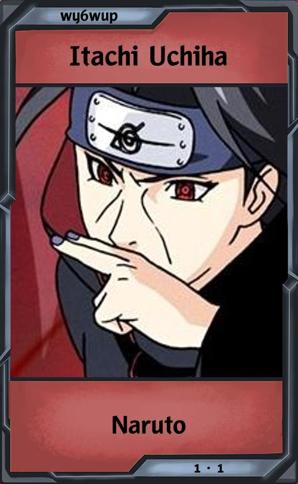

<ion-menu contentId="main-content" swipeGesture="false">
  <ion-header>
    <ion-toolbar>
      <ion-menu-toggle slot="end">
        <ion-button fill="">
          <ion-icon slot="icon-only" name="close"></ion-icon>
        </ion-button>
      </ion-menu-toggle>
      <ion-img src="../../../assets/logo.png" style="width: 205px; padding: 5px 0px 0px 8px"></ion-img>
    </ion-toolbar>
  </ion-header>
  <ion-content class="ion-padding">
    
  </ion-content>
</ion-menu>

<ion-header class="ion-no-border" [translucent]="true">
  <app-header page="drops"></app-header>
</ion-header>

<ion-content [fullscreen]="true">
  <div class="grid">
    <div class="top"></div>
    <div class="left">
      <ion-list style="background-color: transparent !important;">
      
      </ion-list>
    </div>
    <div class="middle">
      <swiper [effect]="'cards'" [grabCursor]="true" class="mySwiper" initialSlide="1" (slideChange)="onSlideChange()" #swiper *ngIf="activeDrop">
        <ng-template swiperSlide>
          
          <ion-button (click)="grabCard()" expand="block" [fill]="btn1 ? 'solid' : 'outline'" [disabled]="!btn1">
            Select Card
          </ion-button>
        </ng-template>
        <ng-template swiperSlide>
          
          <ion-button (click)="grabCard()" expand="block" [fill]="btn2 ? 'solid' : 'outline'" [disabled]="!btn2">
            Select Card
          </ion-button>
        </ng-template>
        <ng-template swiperSlide>
          
          <ion-button (click)="grabCard()" expand="block" [fill]="btn3 ? 'solid' : 'outline'" [disabled]="!btn3">
            Select Card
          </ion-button>
        </ng-template>
      </swiper>

      <div class="ring2" *ngIf="activeDrop"></div>
      
      <div style="position:relative; top: 35%; transform:translateY(-80%)" *ngIf="!activeDrop">
        <h1 class="ion-text-center">Time until next drop:</h1>
        <ion-title class="ion-text-center" *ngIf="900000 >= this.now - this.lastDrop">{{ remaining }}</ion-title>
        <ion-title class="ion-text-center" *ngIf="this.now - this.lastDrop > 900000">Now</ion-title>
      </div>

      <div class="wrap" *ngIf="readyDrop && !activeDrop">
        <button class="button" (click)="activateDrop()">Drop</button>
      </div>

    </div>
    <div class="right"></div>
    <div class="foot"></div>
  </div>


</ion-content>
